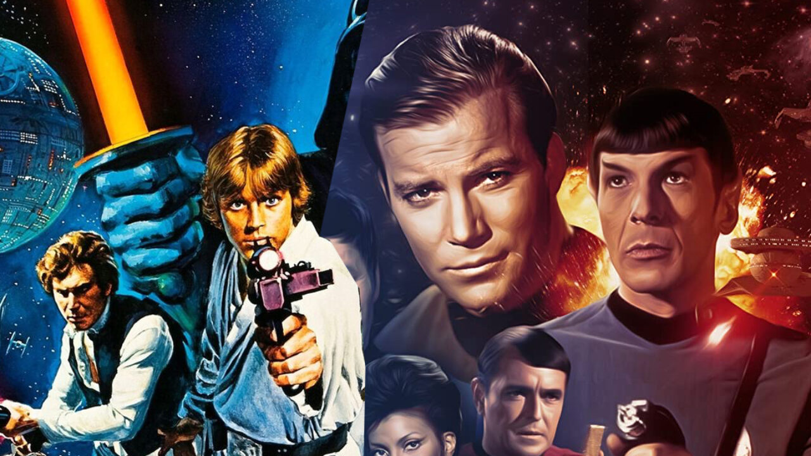

Devices Found in the Story
Silence & the Need for Beer
In the story, the idea that the men are so silent that it seems like they can read each other's minds, and the fact that the men constantly need a beer in their hands is repeated several times throughout the story, beginning from the first three paragraphs.
The repetition of these two characteristics gives the reader a very clear understanding of who these men are and what they stand for. It also helps create a humorous twist at the end when it's revealed that their silence was mistaken for telepathy, and their need for a drink actually helps them bond with the aliens and give themselves comfort so far away from home.
The Spaceship’s Arrival

“A small cloud of road dust briefly surrounded the thing [spaceship]. The men's faces and bodies were bathed in the broad spectrum of colours emitted by the craft, a dozen different hues reflecting the spectrum of visible light, and possibly a few as yet undiscovered by the human race,” (Taylor, 46).
The use of highly descriptive imagery in this quote and in the story overall provides details of the scene that help the reader create a clear visual of the story in their mind. For this quote, the description of the UFO's colours convey just how unique and bizarre the spaceship and situation is.
Star Trek vs. Star Wars

“Mentally, Cheemo was kicking himself. He should have watched more Star Trek as a kid. Star Wars doesn't really prepare you for a situation like this. This was definitely a Star Trek moment,” (Taylor, 48).
For readers who know about both franchises, the allusion effectively describes which type of cliche alien encounter it is. Otherwise, the allusion is good at making Cheemo seem relatable to the reader.
Test Your Knowledge
Question 1
The men’s silence is repeated throughout the story. What unexpected plot consequence does this repetition set up?
Question 2
Why does Taylor describe the spaceship’s light as including colours “as yet undiscovered by the human race”?
Question 3
The men’s constant need for beer is a repeated detail. How does this characteristic function differently at the end of the story compared to the beginning?